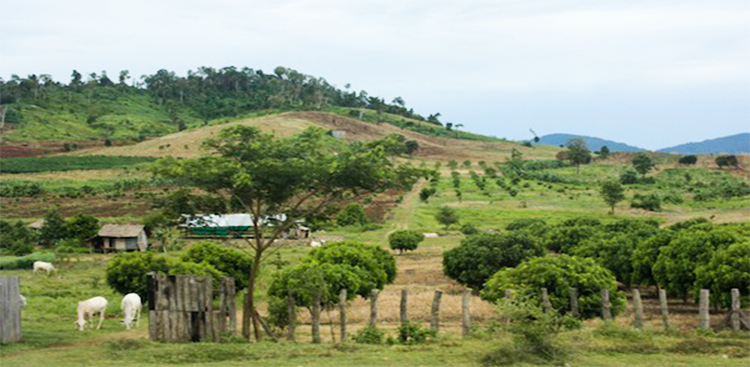
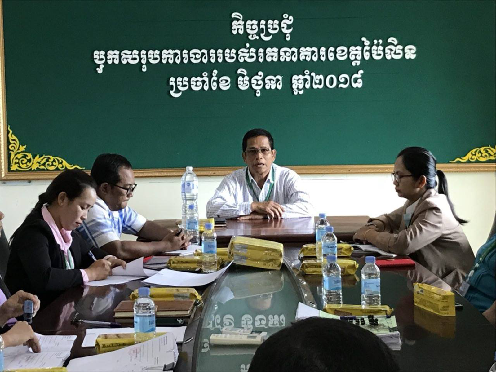

បើនិយាយទាក់ទងនិងអាកាសធាតុណៃខេត្តប៉ៃលិលវិញ ខេត្តនេះមានអាកាសធាតុត្រជាក់ជាងគេនៅប្រទេសកម្ពជា។ ព្រោះដោយសារខេត្តនេះសំបូរទៅដោយភ្នំនឹង កូនភ្នំជាច្រើន ជាពិសេសទៅទៀតសម្បូរទៅដោយទឹកជ្រោះជ្រលងដងអូរ
ដែលធ្វើអោយខេត្តមួយនេះមានសំណើមជាប់ជាប្រចាំ ពីមួយឆ្នាំទៅមួយឆ្នាំ៕

ទីតាំងភូមិសាស្រ្តភូមិសាស្រ្តខេត្តប៉ៃលិន ពុំសូវមានលក្ខណះសមប្រកបប៉ុន្មានទេក្នុងអាជីវកម្មធនមធ្យមនិងធនធំ តែខេត្តមួយនេះមានដីដែលមានពណ៌ក្រហមនិងមានជីវជាតិសម្រាប់ប្រកបមុខរបរកសិកម្មបាន។
ម្យ៉ាងទៀតដោយសម្បូរទៅដោយភ្នំជាច្រើនពុំធ្វើអោយទទួលរងទឹកភ្លៀងជាដំណំផងដែរ។
រីឯសេដ្ឋកិច្ចនៅខេត្តប៉ៃលិនវិញ ប្រជាជនមួយចំនួនធំពឹងផ្អែកទៅលើកសិកម្មខ្នាតធំ នឹងមួយចំនួនតូចប្រកបរបរអាវកម្មគ្រួសារ។ លើសពីនេះទៅទៀតខេត្តប៉ៃលិនមានរមណីយដ្ឋានបែបជាច្រើនកន្លែងដែលកំពុងទាក់ទាញភ្ញៀទេសចរណ៏អោយមកកម្សាន្ត ដែលជាចំនែកមួយ
ក្នុងការអភិវឌ្ឍន៍សេដ្ឋកិច្ចនៅក្នុងខេត្ត។
នៅក្នុងខេត្តប៉ៃលិនមានប្រជាជនសរុប ៨២០២ នាក់ នៃចំនួនប្រជាជនសរុបនៅក្នុងប្រទេសកម្ពុជាដែលមានចំននួន (១៤,៣៦៣,៥១៩ នាក់, ឆ្នាំ ២០០៧, ទិន្នន័យខេត្ត),
ដែលមាន ប្រុសចំនួន ៣៤០៩ នាក់ និងស្រីចំនួន ៤៧៩៣ នាក់។
